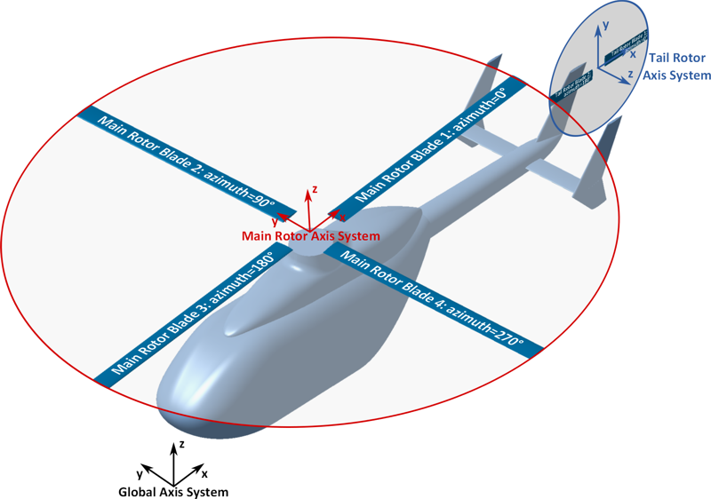
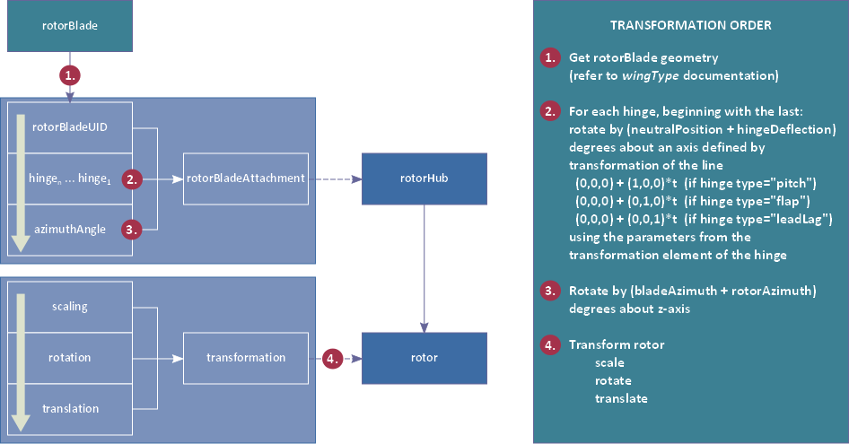

complexType · extension complexBaseType · all
Rotor type, containing a rotor (main rotor, tail rotor, fenestron, propeller,...) of an rotorcraft model.
Rotor (e.g. main rotor, tail rotor, fenestron, propeller,...) definition of a rotorcraft model.
The position and attitude of the rotor is defined using the transformation element. The following image shows the CPACS conventions for the orientation of rotors and rotor axis systems:

Rotor hub attributes, hinges and references to attached rotor blades are defined in the rotorHub element.
Note that rotor blade geometries are only referenced and not defined in the child nodes of the rotor element. Refer to the documentation of rotorBladesType (rotorBladesType) and wingType (wingType) for information on the definition of rotor blade geometries.
The following figure shows the transformations to be applied to rotorBlade geometries to visualize them in the rotor frames for a given state (each rotor: rotorAzimuth given, each hinge: hingeDeflection given):

| Name | Type | Constraints | Use | Default | Description |
|---|---|---|---|---|---|
@externalDataDirectory | xsd:string | optional | Directory of the external data file | ||
@externalDataNodePath | xsd:string | optional | Path of the node inside the external data file | ||
@externalFileName | xsd:string | optional | Name of the external data file | ||
@symmetry | symmetryXyXzYzType | 5 values | optional | Symmetry plane the component is mirrored at | |
@uID | xsd:ID | required | UID |
| Name | Type | Constraints | OccurrenceHow often the element may appear at this place. The schema writes it as minOccurs and maxOccurs on the declaration. | Default | Description |
|---|---|---|---|---|---|
| allThe children below may appear in any order. Each may appear at most once. | |||||
name | stringBaseType | [1..1] required | Name | ||
description | stringBaseType | [0..1] optional | Description | ||
parentUID | stringUIDBaseType | [0..1] optional | UID of the part to which the rotor is mounted (if any). The parent of the rotor can e.g. be the fuselage. In each rotorcraft model, there is exactly one part without a parent part (The root of the connection hierarchy). | ||
type | xsd:string | 4 values | [0..1] optional | Rotor type. Possible values: "mainRotor" (default), "tailRotor", "fenestron" or "propeller". | |
nominalRotationsPerMinute | doubleBaseType | [0..1] optional | Nominal value of the angular rotation speed in rotations per minute (rpm) | ||
transformation | transformationType | [1..1] required | Transformation (scaling, rotation, translation). This element is used to define the position and attitude of the rotor relative to the global or the parent component's axis system. Note that an anisotropical scaling transformation should not be applied to the rotor. | ||
rotorHub | rotorHubType | [1..1] required | The rotorHub element contains the definition of the rotor hub type and number and azimuth angles of the attached blades and their hinges. The rotor hub position and attitude coincides with the rotor axis system's origin and z axis. | ||
| Type | Name |
|---|---|
rotorsType | rotor |